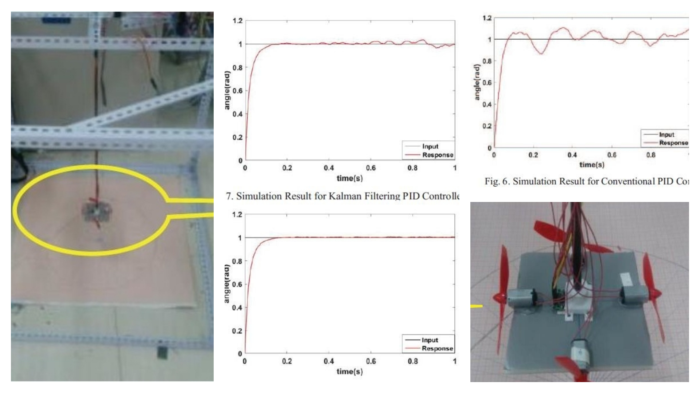

Research
In the undergraduate study, I did several research projects about system design and control, robotic and sensor networks. I learned how to build a robust system to finish a specific task with the help of actuators and sensors.
In graduate study, I learned machine learning and how to apply this knowledge into prediction and signal processing. I also did research on optimization and networks.
My graduate study experience inspired me to apply machine learning methods into designing controller and building robust system. I wish to continue researching on applying machine learning method to build an Intelligent System for my Ph.D. study.
Control System & Robotics
Deformable Snake-Quadruped Robot

In this project, we aimed to built a robot, which can be used in searching rescue after diseaster such as earchquake. The robot has the ability of working in difference terrains such as narrow space under ruins and complexity conditions on the top of ruins. In order to achieve these purpose, the robot has two work forms:
1.snake form: make it easier to work in narrow area such as tunnel or under ruins
2.quad ruped form: working in complex terrains, with obstacle such as rocks and steps
We designed a new robot that combine the advantage of both snake robot and quardpeded robot, it will change its form automatically based on the environment. Our robot was built based on the conception of a modular robot. Each snake chains was a simple robot where two chains work like a snake or quadruped shape. It's also possible that more than two snake chains(4 or 6) connect and work together to finish the rescue task. To control the robot, we used centralized control method, the master chain control the whole network. Sensors such as ultrasonic and camera are also attached to help rescue.
Video of Deformable Snake-Quadruped Robot
Wireless Intragastric Capsule

In this project, we aimed to design an edible intragastric capsule to help users lose weight based on the technology of intragastric balloons. Generally speaking, patient swallow this tiny robot. When it goes down to patent's stomach, it begins to work. The capsule robot will expand to 3-4 times of it's origional size by wireless control. Because it stays in patents stomach with a big size, the patient feels full and don't want to eat, which helps them to loss weight. At the end of treatment, the robot reduces to its original size, and can be expeled through normal excretion.
A short demo of intragastric capsule robot
Wind Pendulum Control System
Wind pendulum is a three dimension(3D) pendulum that at the end of pendulum there is a platform attached four fans facing four different directions. When the pendulum is swinging, it's swing speed and angle was controlled by generating wind from four fans. This system is an nonlinear system with high latency. First, fans itselve is an nonlinear system, it's hard to build a dynamic model of force generated by fans rotation. second, there's always unpredicted latency of force genarated by propeller rotation, which makes it really hard to build an timely control system.
We analysis the wind pendulum system and built the danamic model, applied PID and PID with Kalman Filter as the control methods to control the pendulum system. We finished simulation in Matlab and built a test platform to apply control methods on it.
Networks & Sensor Networks
Ultrasonic Wave Blind Guide Glove

In this project, we designed an accessory aiming to guide blind people, help them avoid dager such as moving vhecle or front obstacle. The accessory was embedded in a glove, it has the functions of:
1.detect distance between user and obstacle of three direction (front, left front, right front), and calculate speed if the obstacle is moving. Give user feedback of distance or speed.
2.prediction if the user will encounter dager in the next 5 seconds.
To achieve these goals, our blind glove was besigned based on a small sensor networks with three ultrasonic sensor and several motors. we used three vibration motors attached on the fingerpad of glove as the distance and speed feedback. Speed and distance will be reflected roughly by vibration level.
A short video of blind guide glove
Moving Detection System of Lower-Limb Exoskeleton (Bachelor Thesis)

This project aimed to implement a moving detection system of lower-limb exoskeletion.
Exoskeletion can improve patients' movement ability and help them recover. In this project, I designed a moving detection system by FPGA chip and six encoders, and intergrated this system into the exoskeleton central control system. Besides, I designed two gaits for recovery training. One gait minimize the power of ankle while the other mimimize the power of knee, these two gaits work for a patient with ankle or knee problem.
Optimization
Priced Based Priority Queue
This project aimed to look for a optimal priority arrangement of transfering information.
Machine Learning
Human Facial Emotion Recognition

In this project, a human emotion recognition system was built by deep learining. (VGG-16 convolution neural network model) Model was trained by 12,993 mage of human faces with eight basic emotions. (anger, fear, happiness, disgust, neutral, surprise, contempt, sadness)
In this project, I finished the following works:
1. Preprocessed and balanced data: upload image data and transfer into data matrix, flip image upside down and make right/left rotate to expanse tranining set. Seperated data in different groups to overcome data imbalance.
2. Built deep learning model used Keras with Tensorflow framework: Built a VGG-16 Convnet, trained the and saved parameters
Cat vs. Dog Species Recognition

In this project, I used Kaggle dataset of 15,000 dogs and 15,000 cat images to training a deeping learning model to indentify if a picture is a dog or cat(By the restriction of computering power in PC, only used 3,000 picutres as training set). By using VGG ConvNet, I built a 16 layers deep neural network, outcome a accuracy of 79% and loss of 0.55 in test set.
Moive Revenue Prediction and Related Recommend System
In this project, a regression system was built to predict movie revenue from TMBD 5,000 movies dataset. Several related movie in the dataset was listed for a given new moive.
In this project, I finished the following works:
1.Applied PCA to extract important feature, applied semi-supervised 1NN to fill missing data.
2.Trained supervised machine learning models by random forest, output the DNN model as the best prediction model with an average error less than 15%.
3. Applied KNN to find the first n nearest movie as the recommended relatively movie.
Publication
Y. Long, J. Xiao, T. Zhang and H. Cheng,
Modeling and control for swing and anti-swing of
a wind pendulum, Conference on Industrial Electronics and Applications (ICIEA), 2016.
H. Cheng, J. Xiao, Y. Long and T. Zhang,
Wind pendulum modeling based-on improved PID
algorithm, Conference on Industrial Electronics and Applications (ICIEA),2016.